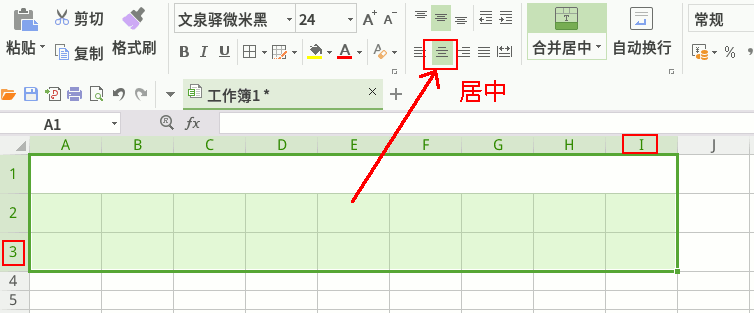
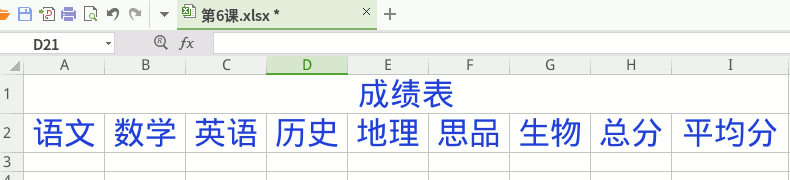

2、输入六门学科的表头，瞄准各个分界线，拖宽一点；

3、选中语文下边的单元格，A3，点上边编辑栏 fx；
4、出来的对话框，类别选“全部”，向下拖动，点“RANDBETWEEN”，
记住是单词Rand Between，作业要用；
5、在参数对话框里，输入最小50，最大100，出来点“确定”；
6、同样，选择数学下边的单元格，B3，点 fx；
7、选择 RANDBETWEEN，点“确定”，最小50，最大100，确定；
8、同样一个一个算出英语、历史、地理、思品、生物的随机数；
9、选中总分下边的 H3，点 fx，
选 sum，
10、先把对话框拖到下边不碍事地方，
框上7门成绩，点“确定”，算出他们的和；
11、同样选中平均分下边的 I3，点 fx，
12、点 AVERAGE，框7门成绩，确定，跟总分是一样的；
设为一位小数；
13、从语文下边A3开始，自动填充到15行；
14、保存文件，文件名改成“第6课”，小数点后面不要动，
找到自己的文件夹，保存；